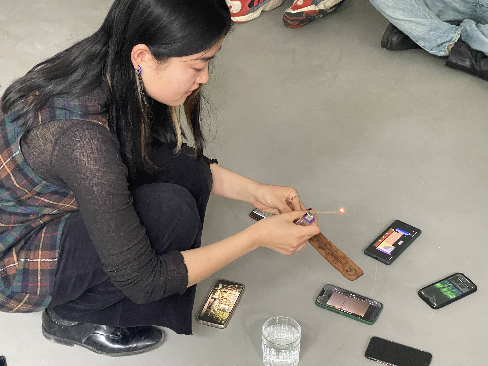

< Alice Yuan Zhang >

Walk the Web! will be a workshop and performance to unravel and reconfigure the Internet from a corporeal perspective. As the state of web is ushered into major shifts, how can we center our social and earthly needs rather than fall into deeper capitalist extraction? What does decentralization mean in context of local context, and how can a network take the shape of community?
Rather than engage from a purely theoretical or logical approach with these questions, this project makes space for vulnerability and solidarity. The preparation of the performance doubles as a process of hands-on learning and reflection, as participants literally unravel used digital infrastructure equipment to make into new communication costumes. Then wearing these, we embody a web in motion through an interactive public procession in the streets, to broadcast our concerns and demands for the future of the Internet.

As a research resident at 0x Salon this spring, I published a critique called The Myth of Web3: Decentralization of What? In researching the networked infrastructure leading up to the development of blockchain, I found myself confronting the widespread neglect of the geopolitical realities undergirding technological innovation, as well as a troubling dependence on systems of machine prediction and organization to solve complex societal issues.
Since then, I have set up a Network Doula Library to gather resources toward decolonize our imagination and cultivate collective stewardship toward the technologies we use.

During my guest lecture for Simon Denny’s class at HFBK, I facilitated a digital grief ceremony to explore technological dependencies from a relational perspective. Together we set up an altar with water (as a foundational conductor of electricity), and fire (as a reminder of caution around technology). To call in “ancestors and ghosts”, we lit up our phones with photos of all that has “passed” in context of technology. The stories spanned antique Walkman's, locked social media identities, mining rigs, conflict minerals, and all the way back to creatures from the carboniferous era whose fossils now serve as a main source of electricity.
Framing with grief offers a space for radical relationing beyond hegemonic Western norms. Grief invites humor and vulnerability as we unpack aspects of a dominant system that we don’t know, feel gratitude toward, or conflicted about. It’s also a good reminder that we can hold these tensions differently and at the same time.

At the AMRO 2022 festival hosted by servus.at, I facilitated a workshop called Prototyping a Relational Web in which we explored network infrastructure through ecological metaphors such as blood clots, mycorrhizal fungi, and starling murmuration. Then, taking cues from Alexis Pauline Gumbs’ lessons on marine mammals and community organizing, we conducted rounds of echolocation by moving our bodies alongside each other while relaying signals in a public outdoors environment. The reflections that followed were surprisingly rich, as we navigated consent through the use of eye contact, and considered the non-neutrality of technology through the ways we vocalized sounds.